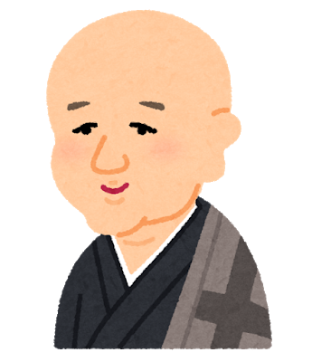

<div class="lp">
  <app-header></app-header>
  <div class="flex lp-1">
    <h2>カンタン顔モザイクツール</h2>
    <p>SNSやブログで、あなたの思い出をシェアしよう</p>
    <div class="lp-button">
      <a href="upload">試してみる</a>
    </div>
    
  </div>
  <div class="flex-between lp-2">
    <figure class="container">
      
    </figure>
    <div class="desc-box">
      <h2 class="lp-2-string">画像編集ツールは入りません</h2>
      <p class="lp-2-string">
        機械学習による顔認識の精度が飛躍した現在では、人力によるモザイク処理は必要ありません。「カオモザッ」は
        あなたの業務フローの「効率」を高めます。
      </p>
    </div>
  </div>
</div>
